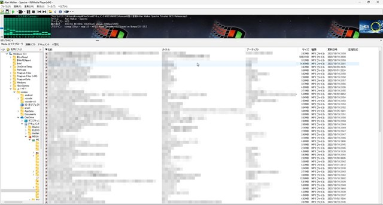
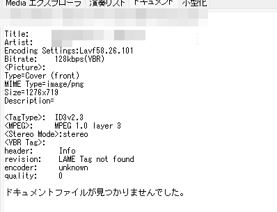
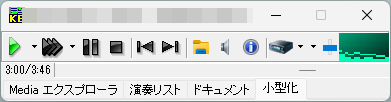

Kb Media player
みなさんは、メディア再生するときに、機能はやっぱりあった方がいいですよね（？）
しかし、機能を多くいれると見にくいソフトができたり、色々難しいらしく、使いやすいのはあまりありません。
すこし、昔のソフトなのですが、とても使い勝手がいいです。
まずは、画像をご覧ください
全体画面

ツールバー画面
ファイル詳細画面

最小化画面

どうでしょうか、個人的に結構見やすいのではないでしょうか？
ツールバー画面の説明は
左から、
「ファイルを開く・プレイリストを保存・再生・一時停止・停止・前の曲に戻る・次の曲に行く・再生ファイルを開く・音量調整（システム）・その曲のプロファイルを開く・環境設定」
また、再生中にスローにしたり、倍速にしたりできます！
ちょっと変わった再生ソフトなので、いれてみては？
ダウンロードはここから